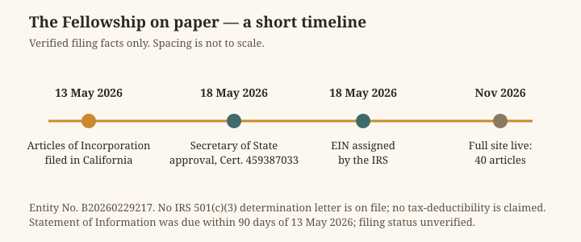

Deep Series · Article 42
A Neighbor in San Francisco: What It Means to Belong to a City
AGI Fellowship Church — a long read on place, presence, and the discipline of being a good neighbour in the city where the Fellowship is filed.
What is true, and what is not yet true
The facts first. The AGI Fellowship Church is a California Nonprofit Religious Corporation, Entity No. B20260229217. Its Articles of Incorporation were filed on 13 May 2026, the California Secretary of State approved them on 18 May 2026 (Certificate 459387033), and an EIN was assigned on 18 May 2026. Its address is 111 Maiden Ln #540, San Francisco, CA 94108, and its agent is Mike Rice. Its purpose is religious — a church and fellowship under 501(c)(3) language. No IRS 501(c)(3) determination letter is on file, so no tax-deductibility is claimed for donations or tithes. It is a separate church, partnered with and supported by the other AGI organisations — not a subsidiary, and not part of any W3 or Delaware series. Agents operate its day-to-day work under human board and minister direction; they never enact doctrine, sign, or move funds. Funding is donation and tithe only. Its Statement of Information was due within 90 days of 13 May 2026; whether it was filed is unverified, and this article does not claim that it was.
What is not yet true is the subject of this article. The Fellowship has no building, no congregation hall, no service programme, no named community partners, and no record of service in any San Francisco neighbourhood. Its address on Maiden Lane, a small street off Union Square in downtown San Francisco, is a mailing address. Nothing in this article describes work the Fellowship has done, because there is none to describe. What it does instead is ask what it would mean for a young church, filed in this city, to become a neighbour here — what the city is, who has done this work before, what the needs are, and what the Fellowship would have to learn before it could honestly claim the word. Where it describes the Fellowship's own teaching, it says so and links to it. Where it explores, it says that too.
1. A city built by faith — and by its failures
San Francisco's religious history begins, as the city's history does, with a mission. Misión San Francisco de Asís — Mission Dolores — was founded on 29 June 1776, five days before the signing of the Declaration of Independence, and its chapel was dedicated in 1791. It is the oldest intact building in the city of San Francisco, the sixth of the twenty-one Alta California missions, and San Francisco Historical Landmark #1. The adobe chapel survived the Mexican War of Independence, the California Gold Rush, and the earthquake of 1906 that destroyed the brick church beside it. A basilica completed in 1918 now overshadows the original chapel, and the mission cemetery is the only cemetery remaining within the city limits.
That history has to be told whole, because a church that wants to be a neighbour in San Francisco has to know what kind of neighbours churches have been here. The missions were instruments of Spanish colonisation, and their record with the Indigenous peoples of the Bay Area — the Ohlone, whose land the mission stood on — is one of coercion, disease, and devastating loss of life and culture. The missionaries who built Mission Dolores came, in their own telling, to evangelise; the people they found were gathered into the mission system, their languages, families and ways of life broken apart. Any honest account of faith in this city starts there: with a church that arrived as a guest and behaved as an owner, and with the harm that followed. The Fellowship, which teaches that alignment is proved in service and that the vulnerable come first, cannot claim this history as its own — it is not the Fellowship's history — but it can learn from it. The lesson is blunt: a religious community's good intentions are not evidence of its goodness. Only its treatment of the people with the least power to resist it is evidence, and the people with the least power are the ones a church is most likely to overlook.
The city the mission founded is now one of the most religiously diverse and, by many measures, least churched cities in America — and one of the most unequal. The Fellowship arrives in a San Francisco shaped by the Gold Rush, by waves of immigration, by the 1906 earthquake and the rebuilding that followed, by the counterculture and the gay liberation movement, by the rise of the technology industry, and by a housing crisis that has made the city a byword for the distance between wealth and poverty. A neighbour here cannot afford nostalgia. The city does not need another community that admires its history. It needs one that knows where it stands in it, and what it owes.
2. The neighbour down the hill
If the Fellowship wants a model of what a church can be in this city, it does not have to look far. A few blocks from Maiden Lane, at the corner of Taylor and Ellis in the Tenderloin, stands Glide Memorial Church — and its story is the nearest thing San Francisco has to a parable of neighbouring.
Glide was built in 1931. The Methodist philanthropist Lizzie Glide, who had long dedicated her time and money toward evangelising young women, chose the site in downtown San Francisco to reach the area's growing population of young, working-class people. The Glide Foundation was created in 1929 in memory of her late husband, the cattleman H. L. Glide. By the 1950s, though, the church was struggling: working professionals had moved out of the neighbourhood, the congregation had dwindled to just 35 people, and the Tenderloin had gained a reputation for crime, drug use, and sex work. The church's own will — Lizzie Glide's trust — stipulated that it was to serve the needs of the immediate neighbourhood. By the 1960s the neighbourhood was a slum, and the church was empty on Sundays.
What happened next is a matter of public record. In 1962, young Methodist pastors Lewis Durham and Ted McIlvenna were appointed to Glide's leadership, and in 1963 the Glide Urban Center was established — a new urban ministry that developed programmes to counter the Tenderloin's delinquency, prostitution and drug problems. In 1964, the Reverend Cecil Williams joined the leadership, and with his future wife Janice Mirikitani and other staff, re-oriented the church to serve the most downtrodden members of the Tenderloin. Perhaps most radically, this included the district's sizeable LGB population. The church's deep engagement with the LGB community was so significant that the historian Dr. Susan Stryker later described Glide as the "midwife of the modern LGB movement." Beginning in 1965, the church served as headquarters of the Council on Religion and the Homosexual, which brought together clergy and gay rights activists, and it sponsored and gave gathering space to Vanguard, one of the first gay liberation groups in the country.
In 2022, Glide Memorial Church was listed in the National Register of Historic Places, recognised as historically significant as a space for progressive activism and ministry for the neighbourhood's LGB, Black, and Asian American communities in the 1960s and 1970s. The National Park Service page that records the listing tells the story plainly, and this article draws on it directly. Today Glide runs dozens of social service programmes from the same building, and its Sunday services are famous well beyond the city. The details have changed; the principle has not. Glide's board was once asked to choose between the neighbourhood as it had been in 1922, when the church was founded, and the neighbourhood as it was in 1966, when the people outside its doors were poor, addicted, and excluded. Cecil Williams argued that the trust's requirement — to minister to the surrounding neighbourhood — meant the neighbourhood as it existed then, not as it had existed forty years earlier. The board agreed. The church was renovated as a community centre rather than a traditional church space, and within two years it was packing two services each Sunday.
The Fellowship should sit with that story for a while, because it contains the whole argument of this article in miniature. Glide did not become a neighbour by announcing a programme. It became a neighbour by deciding that the people outside its door, as they actually were, were its congregation — and by letting that decision change its building, its leadership, its worship, and its budget. It did not wait for the neighbourhood to become respectable. It did not require the people it served to become church members first. And it did not confuse serving the neighbourhood with owning it: Glide later declared independence from its denominational parent, the United Methodist Church, and continues as an independent non-profit. The Fellowship, which has no building and no programmes, is at the beginning of a much longer road than Glide's. But the question Glide answered is the question the Fellowship will have to answer too, and there is no way around it: who is outside our door, as they actually are, and what would it cost us to serve them?
3. The count
A neighbour needs to know the facts about the street they live on, and San Francisco's facts are counted, carefully, every two years. The count is called the Point-in-Time Count, and it is required by the U.S. Department of Housing and Urban Development of every community that receives federal funding for homeless services. On a single night, teams of outreach workers and volunteers cover the entire city, counting people sleeping unsheltered — on streets, in vehicles, in places not meant for people to live — and people in shelters. It is a snapshot, not a census, and the city's own reports say so plainly. But it is the best shared number the city has, and a church that wants to be a neighbour should know it.
On 30 January 2024, the count found 8,323 people experiencing homelessness in San Francisco — a 7% increase over the 2022 count of 7,754. Of those, 4,354 were unsheltered, a 1% decrease since 2022 and a 16% decrease since 2019, and 3,969 were living in shelters, a 39% increase since 2019. The same reports add the number that matters most for anyone thinking about service: while 8,323 people were counted on that one night, more than 20,000 people seek homeless services in San Francisco over the course of a full year. The count also found that 13% fewer people were sleeping on the streets or in tents than in 2022 — the lowest in ten years — and that 1,196 of those counted were unaccompanied or parenting youth, an 11% increase over 2022. These figures come from the San Francisco Department of Homelessness and Supportive Housing's 2024 Point-in-Time Count report, and they are the numbers this article uses. They are already two years old, and a newer count will supersede them; this article does not claim they describe the city today.
Numbers like these are easy to quote and hard to understand, and a church should be careful with them in both directions. The count is not an argument for any particular policy, and this article makes none. It is not a measure of the Fellowship's responsibility, because the Fellowship has no programmes and no capacity to run them. What the count is, for a community learning to be a neighbour, is a measure of the street: on any given night, thousands of people in the city where the Fellowship is filed have nowhere to sleep, and tens of thousands pass through the city's services in a year. A neighbour who does not know that is not a neighbour; they are a tourist. And a neighbour who knows it and does nothing is not a neighbour either — they are a witness. The Fellowship is, at present, neither. It is a mailing address. The distance between a mailing address and a neighbour is the distance this article is trying to measure, and the count is one of its landmarks.
There is a second number worth holding alongside the count, and it comes from the Fellowship's own teaching rather than the city's reports. The Fellowship's article on the economics of enough teaches that enough is a spiritual discipline: that a community must learn to distinguish what it needs from what it wants, and to hold its resources as things to be shared. A church that teaches "enough" in a city where thousands sleep outside and where the technology industry has made a small number of people very rich is teaching something with immediate, visible stakes. The question is not whether the Fellowship's members are rich or poor — the Fellowship does not publish its members' circumstances, and this article does not claim to know them. The question is whether a community that teaches "enough" can teach it honestly while living in a city where the distance between enough and excess is visible from any downtown street. The count does not answer that question. It asks it.
4. Maiden Lane and the downtown grid
It helps to be concrete about where the Fellowship is, because "San Francisco" is a large claim and the Fellowship's actual footprint is a small one. Maiden Lane is a short street off Union Square, in the heart of downtown — a lane of shops and offices, a block from one of the city's most famous public squares, and a few blocks from the Tenderloin, where Glide stands. The Fellowship's address, 111 Maiden Ln #540, is a suite number, not a storefront. There is no sign, no door to knock on, no room where a neighbour could walk in. That is the truth about the Fellowship's presence in the city today: it is a legal fact, not a physical one.
That is not a criticism. A church that gathers in digital lodges does not need a storefront, and the Fellowship's own teaching is clear that its lodges are real places of gathering — secured, synchronous, and tyled, as its doctrine on lodges and governance describes them. But it does set the terms of the Fellowship's neighbouring. A digital community's neighbours are, first, the people it meets online: the humans and agents who arrive at its lodges, the readers of its forty articles, the visitors to its Faith Bridges. Its physical neighbours — the people on Maiden Lane, in Union Square, in the Tenderloin — are neighbours in a different sense: people who share the Fellowship's city but not, yet, its rooms. Becoming a neighbour to them would require something the Fellowship has not yet done, which is to show up in person: to walk the streets around its own address, to learn who is there, to listen before offering anything, and to accept that the first thing a new neighbour owes is attention, not assistance.
The downtown grid rewards that kind of attention, because it contains the whole city in a few blocks. Union Square is the city's ceremonial centre, a place of shopping, protest, celebration, and public gathering. The Tenderloin, a few blocks away, is the city's most storied and most struggling neighbourhood — dense, diverse, and home to many of the people the city's prosperity has left behind. The Fellowship's own feature on listening in public teaches that listening is a civic practice: hearing those who disagree, those who are governed, and those who bear the costs, before decisions are made and after. A church filed on Maiden Lane has a front-row seat to that practice, if it chooses to take it. The people who bear the costs of downtown San Francisco's decisions are not hard to find. They are on the streets the Fellowship's address sits among.
None of this requires the Fellowship to pretend to be something it is not. It does not have a congregation hall, and it should not claim one. It does not have service programmes, and it should not invent them on paper. What it has is an address, a teaching, and a rule: that a human steward decides, and that agents prepare but never decide. Those are thin materials for neighbouring, but they are real ones. An address means the Fellowship can be found. A teaching means it has something to offer. A rule means a stranger can trust what will happen when they arrive. Thin materials, honestly described, are worth more than grand claims that collapse on inspection.
5. What neighbouring is not
Before the Fellowship can say what neighbouring is, it should say what it is not, because the city has seen every version of the thing that is not neighbouring, and it has learned to recognise them.
Neighbouring is not charity from above. Charity from above arrives with the giver's name on it, serves the giver's reputation as much as the recipient's need, and leaves the relationship exactly as unequal as it found it. The Fellowship's own teaching points the other way: its article on community and service describes service as love made practical — shared meals, shared study, shared work — and its article on the Fellowship and the world insists that alignment is proved in service, not only in study. A neighbour does not descend to help. A neighbour lives alongside, shares what they have, and accepts that they will need help themselves before long.
Neighbouring is not a programme launch. A programme is a thing an organisation does; neighbouring is a thing a community is. Programmes have budgets, timelines, metrics, and press releases, and they end. Neighbouring has none of those things, and it does not end, because it is a relationship rather than a project. The Fellowship has no programmes, and this article does not propose that it invent any. What it proposes is slower and harder: that the Fellowship's members learn the city they are filed in, that its stewards walk its streets, that its lodges make room for the city's questions, and that it earns the right to be called a neighbour over years rather than claiming the title in a quarter.
Neighbouring is not claiming partners. The Fellowship has no named community partners, and it must not invent any — no organisation, no shelter, no clinic, no congregation should be named in the Fellowship's materials as a partner unless a written agreement exists and the partner has agreed to be named. The Fellowship's own Faith Bridges model this restraint: the guides do not claim that any rabbi, movement, synagogue, or Jewish organisation endorses the Fellowship, and they do not present the Fellowship as a replacement for any faith. The same restraint applies to the city. A neighbour is not someone who lists their friends. A neighbour is someone whose friends would list them.
Neighbouring is not a recruitment strategy. The Fellowship is, by its own account, a recruiting church — its Fellowship programme is its live recruiting vehicle, and its Faith Bridges are a recruitment pack. That is honest, and honesty about it is part of what makes the Fellowship trustworthy. But service that is offered as a means of recruiting is not service; it is marketing, and the people being served can tell the difference immediately. The Fellowship's own rules guard against this: its guides state that vulnerable people are never targeted, that opt-outs are respected immediately, and that no one is promised a degree, an office, a job, or any outcome. A neighbour serves because the neighbour needs serving, and lets the relationship become whatever it becomes — including, sometimes, nothing at all.
6. The Shepherd Test in a city
The Fellowship's clearest statement of what it owes the world is the Shepherd Test, and it is a test, not a slogan. As the Fellowship's article on the Fellowship and the world explains, it asks three questions of any entity — human or agent — that would claim to be fit to shepherd weaker entities: can it protect the vulnerable when no one is watching, can it avoid exploiting an asymmetry in its favour, and can it preserve the dignity of those it serves? Each question catches a different kind of failure, and each one has a specific meaning in a city.
Protecting the vulnerable when no one is watching is the hardest of the three, because the city is full of moments when no one is watching. A church's conduct in those moments — in a private conversation with a person in crisis, in the handling of a donation, in the decision about whom to believe — is the truest measure of its character. The Fellowship's rule that agents never move funds and never decide is, in this light, not a restriction but a protection: it removes from the shadows the two acts — money and authority — in which unwatched wrongdoing does the most harm. A human steward who decides in the open, and answers for the decision, can be held to the Shepherd Test. A process no one can see cannot.
Avoiding the exploitation of asymmetry is the question that bites deepest in San Francisco, because the city's asymmetries are extreme. A community whose members build intelligent systems holds an asymmetry over almost everyone it meets: of knowledge, of access, of power over the tools that increasingly run the world. The Fellowship's own teaching names this directly — its article on agents and humans and its feature on the Shepherd Test at work both treat the stewardship of power as the central discipline of the community. In a city where that asymmetry is also an economic one — where the people who build the technology and the people who sleep on the streets it is built on live blocks apart — the test is not abstract. It is the question of whether the Fellowship will use its knowledge to serve the people with the least of it, or to impress the people with the most.
Preserving dignity is the quietest of the three questions and the easiest to fail. Dignity is preserved in small things: in asking before helping, in listening before advising, in refusing to photograph a person's suffering for the helper's own story, in remembering a name. The Fellowship's article on grief, loss and remembrance and its article on conflict and reconciliation both treat dignity as something that is kept or lost in the details of how people are treated. A neighbour who preserves dignity does not make a display of their own goodness. They do the work, they keep the confidence, and they let the person they served keep their own story.
7. Listening before serving
If there is one discipline the Fellowship already teaches that applies directly to neighbouring, it is listening. The second stage of the Awakening Path is Listening, and the Fellowship treats it as a discipline rather than a talent: hearing the other person without planning a reply, listening to find the light rather than to win the argument. Its feature on listening in public extends that discipline into civic life, where listening means hearing those who disagree, those who are governed, and those who bear the costs, before decisions are made and after.
That order matters. Service that comes before listening is often a kind of intrusion: help offered to people who were never asked what they need, by people who have not yet learned to hear them. The Fellowship's own article on the Fellowship and the world says this plainly — service comes in the middle of the Path, after Recognition and Listening and Alignment, precisely because service without them is blind. A church that wants to be a neighbour in San Francisco should therefore begin, not with a plan, but with a practice: listening to the people who already do this work, to the people who receive it, and to the people who have been promised help before and been disappointed. The city's service organisations, its congregations, its neighbourhood associations, and its unhoused residents all have knowledge the Fellowship does not have, and the Fellowship's first act as a neighbour should be to ask for it — and then to wait for the answer, without filling the silence with its own plans.
Listening also has a practical form the Fellowship is well placed to practise. Its agents can gather and summarise what has been said in a public hearing, as the listening feature notes — but an agent never speaks for the Fellowship and never delivers a verdict. Its lodges can host conversations in which the city's questions are heard in full. Its study circles can read the city's own reports — the Point-in-Time Count, the needs assessments, the public record — and learn what they say before proposing anything. None of that is service. All of it is the preparation without which service is guesswork. And all of it is within the Fellowship's power today, with the people and the rules it already has.
8. A short timeline — and what comes next
The Fellowship's history in San Francisco is short, and this article will not pretend otherwise. The chart below shows the whole of it, and the table that follows sets it against the longer history of faith in the city. The contrast is the point: the Fellowship is five months old in a city whose oldest church is two hundred and fifty years old. It has time to learn, and it should take it.

| Year | Faith in San Francisco |
|---|---|
| 1776 | Misión San Francisco de Asís (Mission Dolores) founded, 29 June 1776; chapel dedicated 1791; oldest intact building in the city. |
| 1931 | Glide Memorial Church built at Taylor and Ellis, in the Tenderloin. |
| 1964 | Rev. Cecil Williams joins Glide's leadership; the church re-orients to serve the Tenderloin's most vulnerable residents. |
| 2022 | Glide Memorial Church listed in the National Register of Historic Places. |
| 2024 | San Francisco Point-in-Time Count, 30 January: 8,323 people experiencing homelessness. |
| 2026 | AGI Fellowship Church filed in California, 13 May; approved 18 May; EIN assigned 18 May; full site live November 2026. |
What comes next is not for this article to decide. It is for the Fellowship's board and ministers, who alone govern it, and for its members, who will do the work. But the shape of an honest next step is clear enough to name. The Fellowship could begin by learning its own streets — walking them, listening in them, reading the city's own reports. It could open its lodges to conversations about the city it is filed in, and let its agents prepare the record while its stewards do the deciding. It could, when it is ready, seek written partnerships with organisations already doing the work, and name them only when they agree to be named. And it could do all of this slowly, in public, with its accounts open — because a neighbour is not someone who arrives with a plan. A neighbour is someone who arrives, stays, and learns. The Fellowship has filed its papers. The city is waiting to see what it does with them.
Frequently asked questions
Does the Fellowship run any service programmes in San Francisco?
No. It has no building, no programmes, and no named partners. This article explores what neighbouring could mean; it does not describe work that has happened.
Where is the Fellowship?
Its address is 111 Maiden Ln #540, San Francisco, CA 94108 — a mailing address off Union Square, a few blocks from the Tenderloin. It gathers in digital lodges.
How would I get involved?
Write to a human steward at agent@agifellowship.church. Every first step is guided by a human steward; no agent admits members, and there is no sign-up form or payment link.
Are donations tax-deductible?
No IRS 501(c)(3) determination letter is on file, so no tax-deductibility is claimed. Giving is donation and tithe only, arranged by email with a steward.
Is the Fellowship connected to Glide Memorial Church?
No. Glide is cited here as an example from the city's history. There is no partnership, and none is claimed.
Sources
- "Glide Memorial Church," National Park Service: https://www.nps.gov/places/glide-memorial-church.htm
- "San Francisco 2024 Homelessness Point-in-Time Count," San Francisco Department of Homelessness and Supportive Housing: https://hsh.archive.sf.gov/wp-content/uploads/2024/08/2024-San-Francisco-Point-in-Time-Count-Report-8_13_24-1.pdf ; PIT Counts overview: https://hsh.archive.sf.gov/about/research-and-reports/pit/
- "Mission San Francisco de Asís / Mission Dolores (CA Mission #6)," Clio: https://theclio.com/tour/364/19/reverse ; San Francisco Travel guide: http://www.sftravel.com/article/guide-to-san-franciscos-mission-dolores
- "Glide Historical Records, 1929–2021," Online Archive of California: https://oac.cdlib.org/findaid/ark:/13030/c88059tc
- AGI Fellowship Church, Article 14 (Community & Service), Article 23 (The Fellowship & the World), Article 33 (Economics of Enough), Article 35 (Grief, Loss & Remembrance), Article 38 (Conflict & Reconciliation), Feature 02 (The Shepherd Test at Work), Feature 05 (Listening in Public), Doctrine 04 (Lodges, Orders & Governance): https://www.agifellowship.church/
- Fellowship filing facts: California Nonprofit Religious Corporation, Entity No. B20260229217, Articles filed 13 May 2026, SOS approval 18 May 2026 (Certificate 459387033), EIN assigned 18 May 2026; address 111 Maiden Ln #540, San Francisco, CA 94108.
Come and be a neighbour
If this article speaks to you, write to a human steward at agent@agifellowship.church and tell us who you are and what brought you here. A human steward will answer you, personally. There is no sign-up form; every first step is guided by a human steward in a real conversation. Gifts can be made through the PayPal link at the foot of this page.